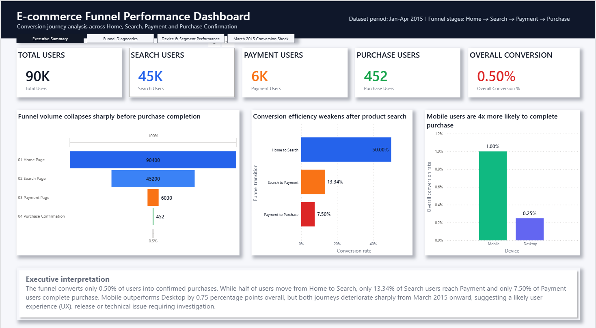
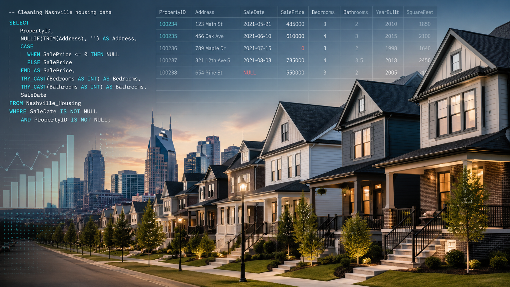
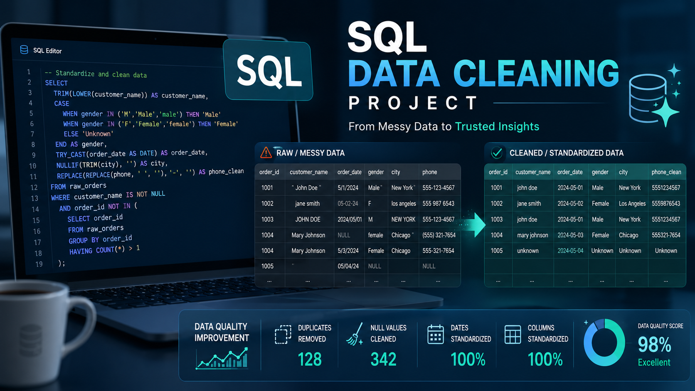
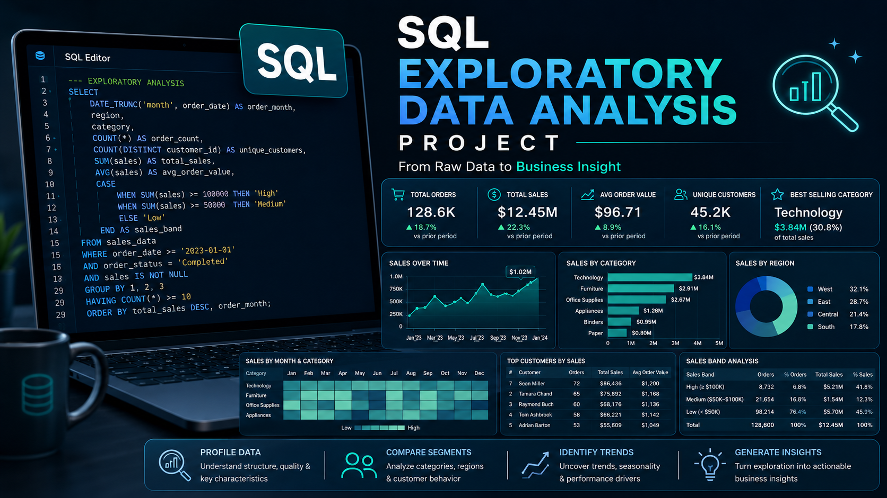

Analytics projects built around business problems, performance insight and decision-ready reporting.
I build data analytics and business intelligence projects that turn raw datasets into clear, practical insights. My work spans SQL, Power BI, Excel and executive reporting, with a focus on data cleaning, modelling, dashboard design, trend analysis and commercial recommendations.
My portfolio showcases dashboard-led analytics, SQL data preparation, exploratory analysis and consulting-style reporting. My flagship UK Road Safety project combines SQL, Power BI, Excel, Department for Transport data, ONS contextual data and an executive slide deck to demonstrate an end-to-end analytical workflow from raw data to actionable recommendations.
Featured Projects
A selection of my strongest analytics projects, demonstrating SQL analysis, Power BI dashboarding, Excel-based validation, executive reporting and consulting-style recommendations.

Flagship consulting-style analytics project combining SQL, Power BI, Excel, Department for Transport data, ONS contextual data and PowerPoint to analyse casualty severity, risk concentration and priority areas for evidence-based road safety intervention.

SQL Server and Power BI project analysing customer journey performance, funnel drop-offs, conversion issues and commercial recommendations across an e-commerce purchase pathway.

Power BI dashboard analysing energy consumption, cost patterns, emissions and renewable versus non-renewable energy performance through clear KPI reporting and visual storytelling.
Additional SQL & Analytics Projects
Additional projects demonstrating SQL data cleaning, exploratory analysis, data quality improvement and structured analytical documentation.

SQL data cleaning project preparing raw housing data for analysis through date standardisation, address restructuring, duplicate handling and data quality checks.

Structured SQL cleaning workflow using a global layoffs dataset, covering duplicate removal, text standardisation, null handling, date formatting and preparation of raw data for analysis.

SQL-based exploratory analysis using a global layoffs dataset to profile data, compare segments and uncover early business insights.
Skills & Capabilities
A commercially focused analytics skill set covering SQL, Power BI, Excel, dashboarding, data cleaning, business intelligence, performance analysis and consulting-style insight development.
Data Analytics
SQL Server • T-SQL • Data cleaning • Data modelling • Exploratory analysis • Aggregations • Joins • CTEs • Data validation • Trend analysis • Segmentation • Funnel analysis • Root-cause analysis
Business Intelligence
Power BI • Power Query • Dashboard design • KPI reporting • DAX measures • Data visualisation • Interactive reports • Performance tracking • Executive summaries • Insight-led storytelling • Decision-focused reporting
Commercial & Operational Analysis
Business problem-solving • Commercial insight • Recommendation development • Performance diagnostics • Customer journey analysis • Marketing analytics • Operations analysis • Risk analysis • Public-sector analysis • Stakeholder communication
Reporting & Presentation
Excel analysis • PivotTables • Reporting packs • PowerPoint presentations • Executive decks • Consulting-style slides • Case study writing • GitHub documentation • Portfolio storytelling
Get In Touch
I am open to opportunities across data analytics, business intelligence, commercial analysis, operations analysis, marketing analytics, business analysis and consulting-style analytical roles.
Please feel free to connect with me on LinkedIn, explore my GitHub repositories or get in touch by email.